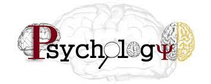
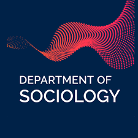
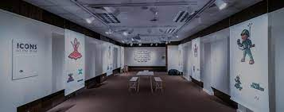
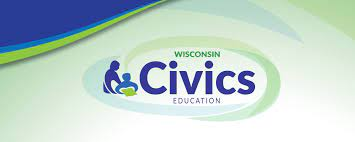
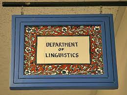

-
Economics
The Economics Department at Dream University offers courses in
macroeconomics, microeconomics, econometrics, and economic theory.
Students analyze economic systems, study market dynamics, and
develop skills in data analysis and economic modeling.
-

Psychology
The Psychology Department at Dream University explores the human
mind and behavior. Students study areas such as cognitive
psychology, developmental psychology, social psychology, and
clinical psychology, gaining insights into human behavior and
mental processes.
-

Sociology
The Sociology Department at Dream University examines social
structures, institutions, and social interactions. Students
analyze topics such as social inequality, gender studies, social
change, and research methods to understand the complexities of
society.
-
Political Science
The Political Science Department at Dream University focuses on
the study of politics, government systems, and public policies.
Students explore topics such as political theory, international
relations, comparative politics, and public administration.
-

Anthropology
The Anthropology Department at Dream University studies human
cultures, societies, and their development. Students learn about
cultural anthropology, archaeology, linguistic anthropology, and
biological anthropology, gaining insights into human diversity and
evolution.
-
History
The History Department at Dream University explores past events,
civilizations, and their impact on the present. Students study
world history, regional histories, and historiography, developing
skills in research, analysis, and critical thinking.
-
Law
The Law Department at Dream University provides comprehensive
legal education and training. Students learn about various
branches of law, legal theories, and develop critical thinking and
analytical skills to navigate the complexities of the legal
system.
-
Philosophy
The Philosophy Department at Dream University explores fundamental
questions about existence, knowledge, ethics, and the nature of
reality. Students engage in critical thinking and philosophical
inquiry to develop a deeper understanding of the human experience.
-

Civics
The Civics Department at Dream University focuses on the study of
citizenship, government, and civic engagement. Students learn
about democratic processes, political systems, and develop the
knowledge and skills necessary to actively participate in society.
-
Geography
The Geography Department at Dream University examines the spatial
relationships between humans and the environment. Students explore
topics such as physical geography, human geography, and geographic
information systems (GIS) to understand the complexities of our
world.
-
Hotel and Tourism
The Hotel and Tourism Department at Dream University prepares
students for careers in the hospitality and tourism industry.
Students learn about hotel management, tourism marketing, and
develop the skills necessary to provide exceptional guest
experiences.
-
Management
The Management Department at Dream University focuses on the
principles and practices of effective management in organizations.
Students learn about leadership, strategic planning,
organizational behavior, and develop skills to become successful
managers in various industries.
-
Accounting
The Accounting Department at Dream University provides education
and training in financial accounting, auditing, taxation, and
managerial accounting. Students develop skills in financial
analysis, reporting, and contribute to the financial
decision-making process.
-

Linguistics
The Linguistics Department at Dream University explores the
structure, history, and diversity of human languages. Students
study phonetics, syntax, semantics, and sociolinguistics to
understand language acquisition, language change, and language in
society.
-

Public Policy Analysis
The Public Policy Analysis Department at Dream University focuses
on the study of policy-making, analysis, and evaluation. Students
learn about the social, economic, and political factors that shape
public policy and develop skills to assess and propose effective
policy solutions.
-

Social Theory
The Social Theory Department at Dream University examines
sociological theories and concepts to understand social structures
and processes. Students analyze social inequalities, power
dynamics, and develop critical perspectives on social issues and
phenomena.
-
Journalism
The Journalism Department at Dream University prepares students
for careers in media and journalism. Students learn about
reporting, news writing, media ethics, and develop skills in
storytelling and multimedia journalism.
-

Education Policy and Reform
The Education Policy and Reform Department at Dream University
focuses on the study of education systems, policies, and reforms.
Students examine educational equity, curriculum development, and
analyze strategies for improving educational outcomes at local,
national, and global levels.
-

International Development Studies
The International Development Studies Department at Dream
University explores the social, economic, and political aspects of
global development. Students examine issues such as poverty,
inequality, sustainability, and learn about strategies for
promoting inclusive and sustainable development worldwide.
-
Archaeology
The Archaeology Department at Dream University explores the study
of human history and culture through excavation and analysis of
artifacts and structures. Students learn about archaeological
methods, cultural heritage preservation, and interpretation of
archaeological evidence.
-

Communication Studies
The Communication Studies Department at Dream University focuses
on the study of human communication processes and their effects on
individuals and society. Students learn about interpersonal
communication, media studies, and the influence of communication
on culture and relationships.
Social Science
Economics
The Economics Department at Dream University offers courses in macroeconomics, microeconomics, econometrics, and economic theory. Students analyze economic systems, study market dynamics, and develop skills in data analysis and economic modeling.
Psychology
The Psychology Department at Dream University explores the human mind and behavior. Students study areas such as cognitive psychology, developmental psychology, social psychology, and clinical psychology, gaining insights into human behavior and mental processes.
Sociology
The Sociology Department at Dream University examines social structures, institutions, and social interactions. Students analyze topics such as social inequality, gender studies, social change, and research methods to understand the complexities of society.
Political Science
The Political Science Department at Dream University focuses on the study of politics, government systems, and public policies. Students explore topics such as political theory, international relations, comparative politics, and public administration.
Anthropology
The Anthropology Department at Dream University studies human cultures, societies, and their development. Students learn about cultural anthropology, archaeology, linguistic anthropology, and biological anthropology, gaining insights into human diversity and evolution.
History
The History Department at Dream University explores past events, civilizations, and their impact on the present. Students study world history, regional histories, and historiography, developing skills in research, analysis, and critical thinking.
Law
The Law Department at Dream University provides comprehensive legal education and training. Students learn about various branches of law, legal theories, and develop critical thinking and analytical skills to navigate the complexities of the legal system.
Philosophy
The Philosophy Department at Dream University explores fundamental questions about existence, knowledge, ethics, and the nature of reality. Students engage in critical thinking and philosophical inquiry to develop a deeper understanding of the human experience.
Civics
The Civics Department at Dream University focuses on the study of citizenship, government, and civic engagement. Students learn about democratic processes, political systems, and develop the knowledge and skills necessary to actively participate in society.
Geography
The Geography Department at Dream University examines the spatial relationships between humans and the environment. Students explore topics such as physical geography, human geography, and geographic information systems (GIS) to understand the complexities of our world.
Hotel and Tourism
The Hotel and Tourism Department at Dream University prepares students for careers in the hospitality and tourism industry. Students learn about hotel management, tourism marketing, and develop the skills necessary to provide exceptional guest experiences.
Management
The Management Department at Dream University focuses on the principles and practices of effective management in organizations. Students learn about leadership, strategic planning, organizational behavior, and develop skills to become successful managers in various industries.
Accounting
The Accounting Department at Dream University provides education and training in financial accounting, auditing, taxation, and managerial accounting. Students develop skills in financial analysis, reporting, and contribute to the financial decision-making process.
Linguistics
The Linguistics Department at Dream University explores the structure, history, and diversity of human languages. Students study phonetics, syntax, semantics, and sociolinguistics to understand language acquisition, language change, and language in society.
Public Policy Analysis
The Public Policy Analysis Department at Dream University focuses on the study of policy-making, analysis, and evaluation. Students learn about the social, economic, and political factors that shape public policy and develop skills to assess and propose effective policy solutions.
Social Theory
The Social Theory Department at Dream University examines sociological theories and concepts to understand social structures and processes. Students analyze social inequalities, power dynamics, and develop critical perspectives on social issues and phenomena.
Journalism
The Journalism Department at Dream University prepares students for careers in media and journalism. Students learn about reporting, news writing, media ethics, and develop skills in storytelling and multimedia journalism.
Education Policy and Reform
The Education Policy and Reform Department at Dream University focuses on the study of education systems, policies, and reforms. Students examine educational equity, curriculum development, and analyze strategies for improving educational outcomes at local, national, and global levels.
International Development Studies
The International Development Studies Department at Dream University explores the social, economic, and political aspects of global development. Students examine issues such as poverty, inequality, sustainability, and learn about strategies for promoting inclusive and sustainable development worldwide.
Archaeology
The Archaeology Department at Dream University explores the study of human history and culture through excavation and analysis of artifacts and structures. Students learn about archaeological methods, cultural heritage preservation, and interpretation of archaeological evidence.
Communication Studies
The Communication Studies Department at Dream University focuses on the study of human communication processes and their effects on individuals and society. Students learn about interpersonal communication, media studies, and the influence of communication on culture and relationships.